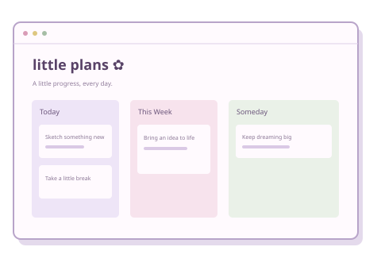
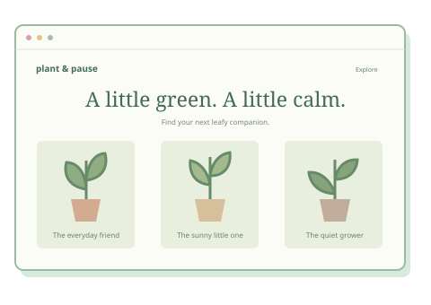
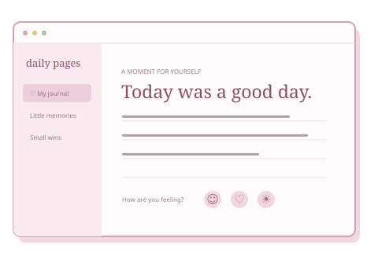

Frontend development
Building the parts people see and interact with.
A little code. A lot of curiosity.
Developer & curious human.
Turning little ideas into thoughtful digital experiences. Learning, building, and making the web a friendlier place.
Always making room for something new.
 a work in progress, in the best way.
a work in progress, in the best way.The human behind the screen
Your future favorite teammate
I’m [Your Name], a [your course or developer role] who enjoys connecting creativity with code. I’m interested in building useful, accessible websites that feel just as good to use as they look.
This is where my learning comes to life: small experiments, thoughtful projects, and plenty of “what if?” moments. Replace this introduction with your own story.
Things in my toolkit
A growing collection of tools
for bringing ideas to life.
Example toolkit · Replace these with technologies you actually use.
Building the parts people see and interact with.
Finding the balance between useful and delightful.
Small tools that make building a little smoother.
Next on my learning list: [your next technology]
Where it all starts
| Qualification | Institution | Years | Highlights |
|---|---|---|---|
| [Your degree or program] | [Your university] | [Start–End] | [Relevant coursework or activities] |
| [Previous qualification] | [Your school] | [Start–End] | [Your learning highlights] |
From “what if” to “here it is”
Illustrative project concepts · Add your own work and links here.

Productivity / Web app
A cozy task planner concept for making busy days feel a little more manageable.
[Add your project description and links]

Lifestyle / Website
A friendly plant-care website concept for growing a greener little corner at home.
[Add your project description and links]

Personal / Web app
A digital journal concept to collect thoughts, small wins, and everyday inspiration.
[Add your project description and links]